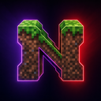

Nexus Launcher
Forge 1.20.1 · mods sob demanda
…
Status do servidor
Versão—
Jogadores—
MOTD—

Vamos preparar o Nexus Launcher. Primeiro, qual launcher do Minecraft você usa?
Detectando…
O servidor roda Forge 1.20.1-47.4.21. Vamos conferir a versão atual.
Verificando…
Baixando os mods que faltam na sua pasta.
Verificando mods…
Garantindo o perfil Forge 1.20.1 instalado (idempotente).
Preparando Forge…
Tudo configurado. Resumo:
Forge 1.20.1 · mods sob demanda